Zennの「JavaScript」のフィード
フィード
「ブラウザで100GBのログを開ける」は本当か — Log Voyager と Wasm版 UwView を47GBで実測した
Zennの「JavaScript」のフィード
AIに50GBのログ調査ツールを尋ねたら、Copilotが私の知らない「Log Voyager」を勧めてきた——という実験の続編です。調べてみると実在どころか、「ブラウザで100GBのログを開ける」「インストール不要で高速」と評判のツールでした。なら、測るしかありません。 対戦カード — 同じ「ブラウザ」の土俵私が開発している UwView には、技術検証用に公開している Wasm（WebAssembly）版（無料・ブラウザで動作）があります。つまり、ブラウザ vs ブラウザの直接対決ができます。対象: OpenStreetMap日本 XML — 47.73GB・892,239...
7時間前
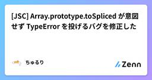
[JSC] Array.prototype.toSpliced が意図せず TypeError を投げるバグを修正した
Zennの「JavaScript」のフィード
[JSC] JavaScriptCore のデフォルト派生コンストラクタ呼び出しに関するバグを修正した に続く JavaScriptCore の話です．本稿では，320830 – Array.prototype.toSpliced throws TypeError instead of RangeError when length is Infinity で報告されたバグの詳細と修正について述べていきます． TL;DRArray.prototype.toSpliced には，新しく生成される配列の長さが 2**53-1（= Number.MAX_SAFE_INTEGER[1]）...
8時間前
競馬の配合の毛色で重みづけをするJavascript
Zennの「JavaScript」のフィード
Geminiに頼んで競馬の配合のプログラムを作ってもらいました<!DOCTYPE html><html lang="ja"><head><meta charset="UTF-8"><title>毛色シミュレーター</title><style> body { font-family: sans-serif; text-align: center; padding: 40px; } select, button { font-size: 18px;...
13時間前
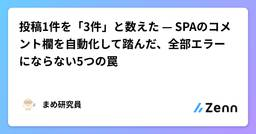
投稿1件を「3件」と数えた — SPAのコメント欄を自動化して踏んだ、全部エラーにならない5つの罠
Zennの「JavaScript」のフィード
個人の自動化プロジェクトで、他媒体の記事に付けたコメントを追いかけ、著者から返信が来ていたらそこへ返す、という処理を回している。対象はコメント欄がスレッド構造になっている Web サービス（Next.js の SPA、エディタは CodeMirror）。トップレベルにコメントを投稿するスクリプトは既にあったので、最初はそれを使い回そうとした。が、それだと会話が2本に割れる。 著者の返信への応答が、スレッドの中ではなく新しいトップレベルコメントとして生えてしまうからだ。そこで「スレッド内に返信する」版を書いた。やることは、返信欄を開く・本文を入れる・ボタンを押す、それだけのはずだった。...
13時間前
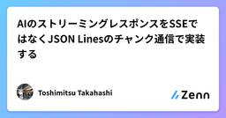
AIのストリーミングレスポンスをSSEではなくJSON Linesのチャンク通信で実装する
Zennの「JavaScript」のフィード
背景AIチャットのレスポンスをストリーミングするとき、よく使われているのが Server-Sent Events（SSE）で、OpenAIやAnthropic等のAPIやMCPサーバーのレスポンスでも採用されています。実際、いくつかのAIチャット系のプロジェクトで、AIプラットフォームのレスポンスを改変しつつブラウザへストリームする実装を行いました。この際に、AWS App Runner 等一部の中間プロキシやロードバランサーのせいで、SSEが動かない問題がありました。具体的に SSE 仕様を深堀すると、本来の イベント 通知目的でないのに SSE を使うのが正しいと考えられな...
14時間前
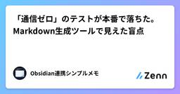
「通信ゼロ」のテストが本番で落ちた。Markdown生成ツールで見えた盲点
Zennの「JavaScript」のフィード
入力を外へ送る処理は書いていない。それでも、本番では「操作後のHTTP通信が0件」のテストが落ちました。Obsidian用のMarkdown生成ツールで検出されたのは、Cloudflareのページ性能計測 /cdn-cgi/rum でした。入力内容を送らないことをどう確かめるか。コピー拒否時の案内や、画面とダウンロード内容の一致まで、実装と本番での検証をまとめます。作ったのは、時刻付きの箇条書きやチェックボックスを選び、プレビューから .md を保存できる小さなツールです。保管庫への接続やアカウントは不要。シンプルメモの開発で得た記録を、ソース付きで紹介します。 出力をただの文字...
15時間前
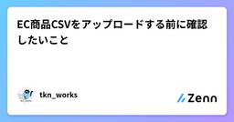
EC商品CSVをアップロードする前に確認したいこと
Zennの「JavaScript」のフィード
ECサイトの商品登録や在庫更新でCSVを使っていると、アップロード時にエラーが出て止まることがあります。例えば、こんなケースです。商品CSVをアップロードしたら項目数エラーになるExcelで編集して保存したら文字化けした商品説明文を入れたら列がズレた必須項目を入れたはずなのにエラーになる在庫数や価格の列でエラーになるCSVは見た目には表に見えますが、実際にはテキストファイルです。そのため、Excelやスプレッドシートで開いたときには問題なく見えても、ECサイト側へアップロードするとエラーになることがあります。 よくある原因 文字コードが合っていないECサイト...
20時間前
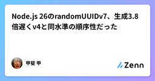
Node.js 26のrandomUUIDv7、生成3.8倍遅くv4と同水準の順序性だった
Zennの「JavaScript」のフィード
はじめにNode.js でDB主キー用のIDを設計しているエンジニア向けの記事です。Node.js 26で crypto.randomUUIDv7() が標準ライブラリに加わりました。UUIDv4（完全ランダム）と違い、先頭にミリ秒精度のタイムスタンプを埋め込むことで「時系列順にソート可能」を謳うUUIDv7の実装です。B-treeインデックスへの挿入がランダムUUIDより効率的になる、とよく紹介されている機能ですが、実際にどの程度の差が出るのかを手元のNode.js 26.8.1で計測しました。 一覧（評価軸別の実測結果）評価軸randomUUID（v4）ran...
21時間前
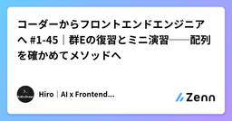
コーダーからフロントエンドエンジニアへ #1-45｜群Eの復習とミニ演習──配列を確かめてメソッドへ
Zennの「JavaScript」のフィード
はじめに群E「配列の基本」は、今回で最終回です。#1-38 の「配列とは何か」から前回の for...of まで、7記事にわたって「複数の値をまとめて持ち、取り出し、出し入れし、くり返す」方法を見てきました。ただ、群Eには他の群にはない特徴があります。「元の配列が変わるのか、変わらないのか」 という軸が、ほぼ全記事に顔を出したことです。push も splice も元を書き換え、slice は書き換えない。= ではコピーにならない。この一本の線を掴めているかどうかが、次の群F（配列メソッド）と、その先のReactの状態管理を大きく左右します。そこで今回は、群Eの内容を4つのテ...
1日前
transformとzoomの取り違えで踏んだ3つの不具合、ブラウザ標準のXSLTProcessorで公文書XMLビューアを作った
Zennの「JavaScript」のフィード
日本年金機構やe-Govが配布する電子公文書は、XMLファイルと様式ファイル(XSL)の組で届く。この組を、ローカルサーバーを立てずにブラウザだけで様式通り表示するwebアプリビューアを作った。https://make-good-life.com/tools/xml-viewer/この記事では、実装で使った考え方と、実際に踏んだ不具合とその対処を書く。 file://ではXSLT変換が動かないxmlの先頭には<?xml-stylesheet?>という一行があり、どの様式ファイルを適用するかを指定する。ブラウザはこれを読んでxmlと様式を組み立てて表示するが、この組み...
1日前
ふりがなの rt から読み上げ文を作る — 音声ファイルもデータの追加配信もゼロで漢字を読み違えない
Zennの「JavaScript」のフィード
こんにちは。小学生向けのニュースサイト、こどもニュースをつくっています。低学年の読者のために、記事を読み上げる機能を付けました。ボタンを押すと本文を音声で読み、今読んでいる文がハイライトされます。作る前に悩んだのは、何を読ませるかでした。 音声ファイルを作らない最初に考えたのは、記事ごとに音声を生成して配ることでした。読み上げの品質は選べますし、再生はどの環境でも安定します。やめました。記事は毎日増えるので、生成のコストが記事数に比例します。公開サイトは静的な書き出しなので、成果物のサイズもそのぶん増えます。代わりにブラウザ内蔵の Web Speech API（speech...
1日前
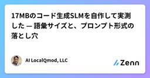
17MBのコード生成SLMを自作して実測した — 語彙サイズと、プロンプト形式の落とし穴
Zennの「JavaScript」のフィード
JavaScript のコード生成だけに絞った小さな言語モデル（SLM）を、トークナイザーから自分で作って 4 本公開しています。一番小さいもので 17.4 MB、パラメータ数は約 2,700 万です。7B クラスの 1/260 程度になります。この記事は「すごいモデルができました」という話ではありません。実際に動かして測った結果と、そこで分かった落とし穴の記録です。うまくいかなかった部分も、測定値をそのまま載せます。!記事中の数値・出力はすべて、公開中の GGUF を実際にダウンロードしてllama-cpp-python 0.3.32 で実行した結果です。推定値は含みま...
1日前
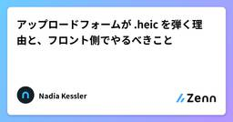
アップロードフォームが .heic を弾く理由と、フロント側でやるべきこと
Zennの「JavaScript」のフィード
iPhone で撮った写真をアップロードしようとしてフォームに弾かれる。ファイル名はIMG_4032.HEIC。ユーザーは困惑し、サポートに問い合わせが来る。この問題はフロントエンド側の対処とユーザー側の対処が別物なので、両方を分けて整理します。 まず HEIC が何なのかHEIF はコンテナフォーマットで、iOS 11 以降の iPhone は既定でこれを使い、拡張子 .heic で保存します。中の画像は HEVC（H.265）で圧縮されていて、ここが問題の根っこです。HEVC は特許で保護されています。実害が出るのは Windows です。.heic を開くには Mi...
2日前

開発環境を決める～【連載】実況パズルプログラミング
Zennの「JavaScript」のフィード
前回は、okozeを始めた理由と、このプロジェクトを通して考えてみたいことを書きました。今回は、実際にokozeを作るための開発環境を決めます。 Webアプリケーションか、スタンドアロンアプリケーションか大きく分けると、次の2つの方法があります。Webアプリケーションスタンドアロンアプリケーションスタンドアロンアプリケーションなら、OSに直接アクセスできますし、Webプラットフォームによる制約も避けることができます。一方、今回のokozeにはWebアプリケーションにも魅力があります。複数のOS向けに別々のバージョンを用意しなくても、多くの環境で動かせる可能性がありま...
2日前
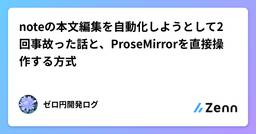
noteの本文編集を自動化しようとして2回事故った話と、ProseMirrorを直接操作する方式
Zennの「JavaScript」のフィード
note の記事本文を、ブラウザ操作の自動化で書き換えようとしました。「範囲を選択して貼り替える」だけの単純な作業のはずが、2回、違う原因で事故りました。 1回目は本文の先頭に意図しない挿入が起き、既存のテキストと結合して壊れた状態のまま公開されました。2回目は「貼り替えたつもり」が実際には追記になり、本文が丸ごと二重になりました。原因はどちらも同じところにあります。note のエディタは ProseMirror で、DOM上のテキスト選択とエディタ内部の選択状態は別物だということです。合成イベントで「選択して削除して貼る」を再現しようとする限り、この2つのズレにいつか当たります。最...
2日前
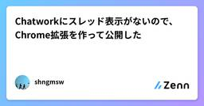
Chatworkにスレッド表示がないので、Chrome拡張を作って公開した
Zennの「JavaScript」のフィード
はじめにChatworkの返信は、リンクを押せば親メッセージに飛べます。でも「この部屋でいま何本の話が同時に動いているのか」は、直感的にわかりません。Slackにはスレッドがあります。Chatworkにあるのは返信と引用です。この差は機能の欠落というより、画面の情報構造の差だと思っています。どのメッセージがどのメッセージへの返信か、というデータ自体は存在しているのに、表示が時系列の1列しかない。これは思想の違いなのでChatwork批判をするつもりはなく、スレッド機能は便利ですが正しく使うにはユーザーのリテラシーが求められるので、ユーザー層を考えればつけないほうが正しいと思い...
2日前
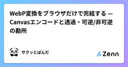
WebP変換をブラウザだけで完結する — Canvasエンコードと透過・可逆/非可逆の勘所
Zennの「JavaScript」のフィード
3行まとめ画像を WebP へ（また WebP から JPEG/PNG へ）変換するブラウザ完結ツールを作った。サーバー不要で、canvas.toBlob(..., 'image/webp', quality) がWebPエンコードを担うWebPは同等画質でJPEGより2〜3割ほど軽くなり、しかも透過（アルファチャンネル）を持てる。「小さくしたいが透明も残したい」を両立できるのがJPEGとの決定的な違い品質スライダーが効くのは非可逆のWebP・JPEGだけ。可逆のPNGでは品質引数を渡さないWebPはWeb表示を軽くするのに効くが、扱いに困る場面もある。「サイトの画像を...
2日前
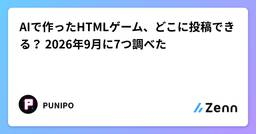
AIで作ったHTMLゲーム、どこに投稿できる？ 2026年9月に7つ調べた
Zennの「JavaScript」のフィード
ChatGPTやClaudeに「ミニゲーム作って」と頼むと、HTMLファイルが1枚出てきます。ブラウザで開けば動く。じゃあこれをどこに置けば人に遊んでもらえるのか。2026年9月に、投稿できそうなサイトを7つ、公式ページの記載を読んで調べました。先に断っておくと、私はこの中の PUNIPO を作っている人間です。なのでPUNIPOのことは一番よく知っていますが、他のサイトも同じ基準で並べます。間違いがあればコメントで教えてください。直します。 結論の表「HTML1枚をそのまま」は、zipにせず、サーバーも用意せず、ファイル1つで投稿できるかどうかです。サイトHTML1...
2日前

コーダーからフロントエンドエンジニアへ #1-44｜for...of とくり返しの制御──モダンな回し方
Zennの「JavaScript」のフィード
はじめに前回の #1-43 で、for文の3つ組（初期化・条件・更新）を扱いました。配列を回せるようになった一方で、こんな引っかかりも残ったはずです。const items = ["りんご", "みかん", "ぶどう"];for (let i = 0; i < items.length; i++) { console.log(items[i]);}やりたいことは「中身を順番に取り出す」だけなのに、カウンタの i が3回も登場します。しかも i を使うのは最後の items[i] の一箇所だけ。目的に対して、書く量が多すぎます。そこで登場するのが for...o...
2日前
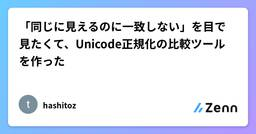
「同じに見えるのに一致しない」を目で見たくて、Unicode正規化の比較ツールを作った
Zennの「JavaScript」のフィード
背景私は文字コードが苦手です。苦手なまま10年以上やってきたので、いまさら向き合うのも気が重いのですが…、自分のサイト群を自動更新していると、年に何度か「同じ文字列のはずなのに一致しない」に殴られます。直近だと、ファイル名から作った slug と、JSON に書いた slug が一致しませんでした。ターミナルに並べて表示すると、完全に同じに見える。それでも === は false を返す。こういうとき、毎回 Node の REPL を開いて [...s].map(c => c.codePointAt(0).toString(16)) を打っています（効率は悪いです…...
2日前